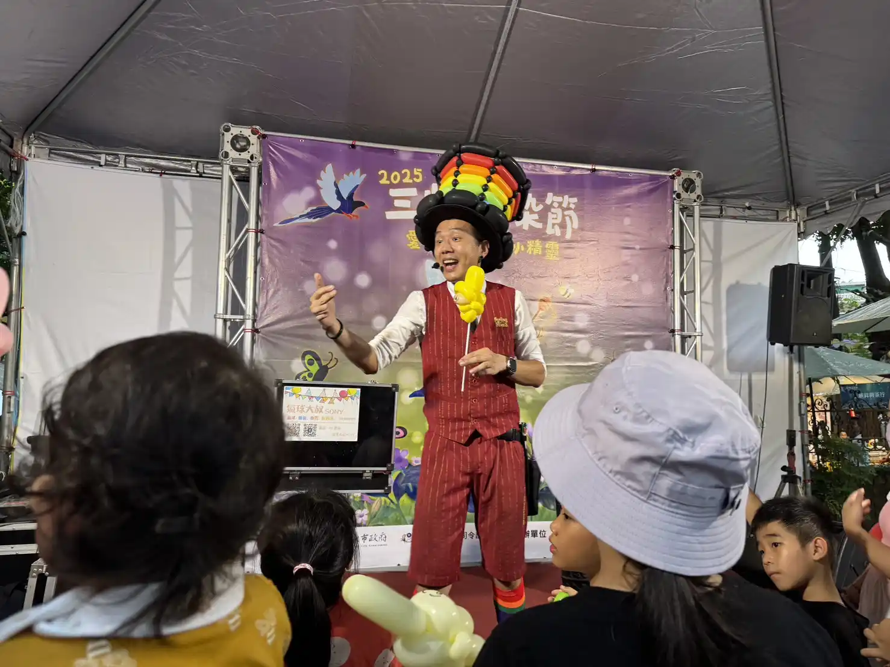
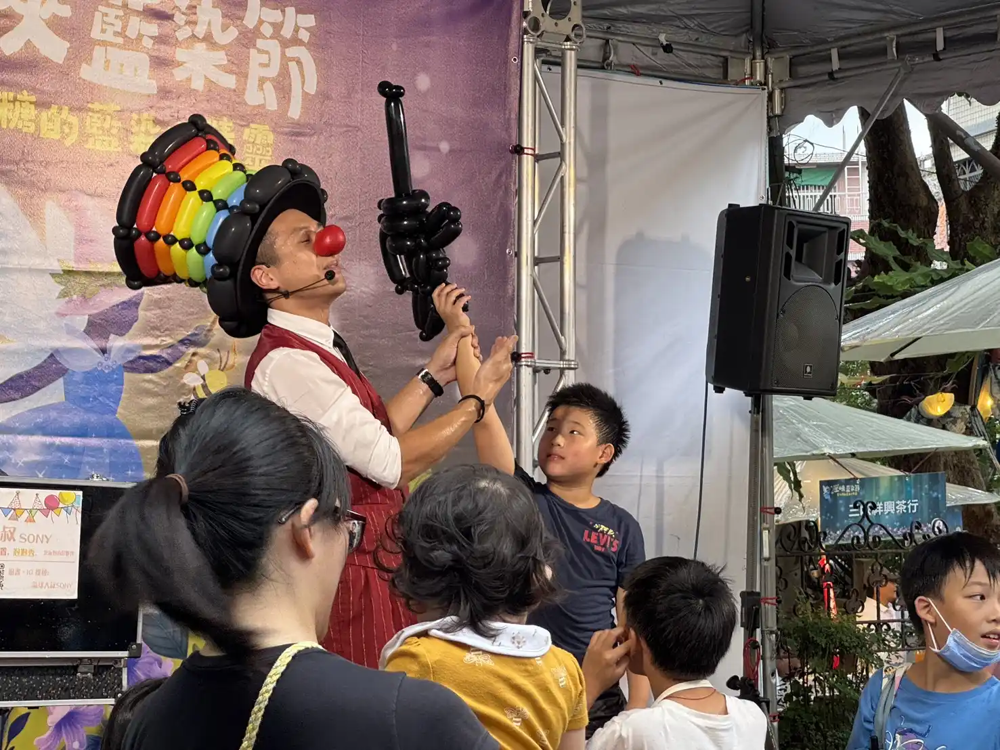
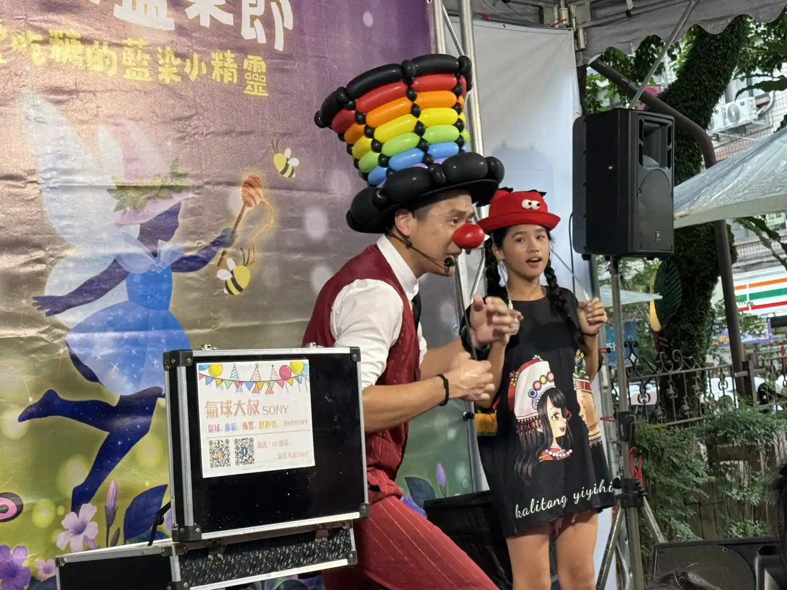
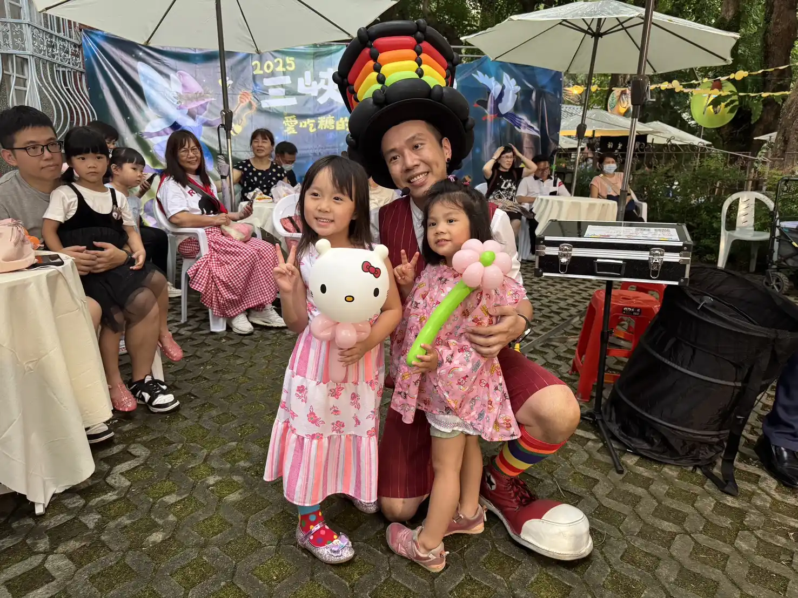

氣球大叔 Sony × 新北三峽藍染節｜2025 魔術氣球秀演出紀錄
歡樂親子活動、現場氣球魔術互動，讓新北市家庭留下難忘的文化回憶
📍 地點：新北市三峽區 三峽歷史文物館
藍染節盛大登場：新北親子活動的人氣熱點
2025 年新北市三峽藍染節以「森林裡愛吃糖的藍染小精靈」為主題，集結藍染文化、親子市集與現場表演。氣球大叔 Sony 獲邀帶來精彩的魔術氣球秀，於三峽歷史文物館廣場凝聚數千人潮，成為活動最具活力的焦點演出。

魔術氣球互動秀：親子共融的新北亮點活動
Sony 老師以幽默活潑的風格，將魔術結合手折造型氣球。小朋友們踴躍上台互動，家長們紛紛紀錄下這珍貴的瞬間，形成新北市最有溫度的親子活動畫面之一。


活躍新北各區：專業氣球魔術服務首選
除了三峽，氣球大叔 Sony 的足跡遍及新北市各個角落。從板橋、新店、淡水到中永和，不論是社區活動、商場慶典或校園慶生，Sony 都能以職業級的控場實力，為每一場親子活動創造獨特記憶。

「三峽藍染節因為氣球大叔的加入而更具層次，專業的魔術互動讓文化傳承與歡笑完美共存！」— 新北活動主辦單位回饋分享
結語：新北市政府與企業信賴的表演團隊
氣球大叔 Sony 在 2025 三峽藍染節的精彩紀實，再次證明了我們處理大型政府慶典的高標能力。 如果您正在規劃 **新北氣球魔術表演**、**新北親子活動** 或 **企業家庭日演出**，氣球大叔 Sony 絕對是您最專業且值得信賴的首選夥伴。
🔥 更多新北在地與官方慶典推薦：
- 👉 新北官方案例：新北林口 Plim Plim 派對｜客製角色氣球人偶紀錄
- 👉 官方大型盛會：基隆城市博覽會｜國門廣場萬人魔術氣球秀
- 👉 教育宣導專案：基隆幼兒園 SDGs 永續教育｜用魔術引導環保意識